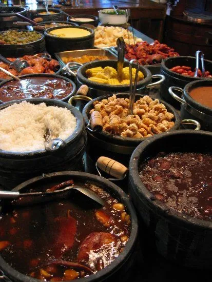

Milho e derivados
Fubá, canjiquinha e angu mostram como um mesmo ingrediente pode estar presente em receitas de diferentes tipos.
🍲 Sabores de Minas
Sabores construídos ao longo do tempo, entre encontros, ingredientes e tradições.
📖 Tradição que passa de geração em geração
A culinária mineira foi construída ao longo da história a partir do encontro de diferentes povos, hábitos e ingredientes. As condições de vida, a disponibilidade de alimentos e os costumes de cada região ajudaram a formar receitas que hoje são reconhecidas como parte da identidade de Minas Gerais.
Mais do que uma lista de pratos, essa culinária reúne modos de preparar, conservar e compartilhar alimentos. Muitas receitas continuam sendo ensinadas dentro das famílias e adaptadas de acordo com a região e a preferência de quem cozinha.
Conheça os pratos típicos
⛏️ Origens e cotidiano
Durante o período de exploração do ouro, o território que hoje corresponde a Minas Gerais recebeu pessoas de diferentes lugares. O crescimento dos povoados e a rotina de trabalhadores, comerciantes e viajantes contribuíram para a circulação de ingredientes e práticas culinárias.
As longas viagens também influenciaram a alimentação. Tropeiros e outros viajantes precisavam de alimentos que fossem resistentes ao transporte e ajudassem a sustentar a jornada. Preparações com feijão, farinha e carnes conservadas se tornaram importantes nesse contexto e ajudam a explicar a presença de pratos reforçados na cozinha regional.
🌽 Ingredientes do dia a dia
Milho, mandioca, feijão, couve, queijo, leite e carne de porco são alguns dos ingredientes muito associados às receitas mineiras. Eles aparecem em preparações diferentes, desde pratos principais até quitandas e sobremesas.
Fubá, canjiquinha e angu mostram como um mesmo ingrediente pode estar presente em receitas de diferentes tipos.
O queijo aparece em quitandas, acompanhamentos e combinações doces, além de fazer parte da produção tradicional do estado.
São ingredientes presentes em pratos reforçados, como o feijão tropeiro e o tutu, com variações de preparo entre famílias.
☕ Muito além da receita
O café passado, o pão de queijo, o bolo de fubá e as quitandas fazem parte de muitos costumes ligados à hospitalidade mineira. Almoços de domingo, reuniões familiares e festas também ajudam a manter receitas e lembranças vivas.
Cada família pode ter seu próprio jeito de preparar um prato. Por isso, a culinária mineira não é formada por receitas únicas e imutáveis: ela continua sendo transmitida, experimentada e modificada, sem perder a ligação com a história e com a vida cotidiana.
“Mais do que alimentar, cozinhar também é uma forma de preservar lembranças e compartilhar afeto.”